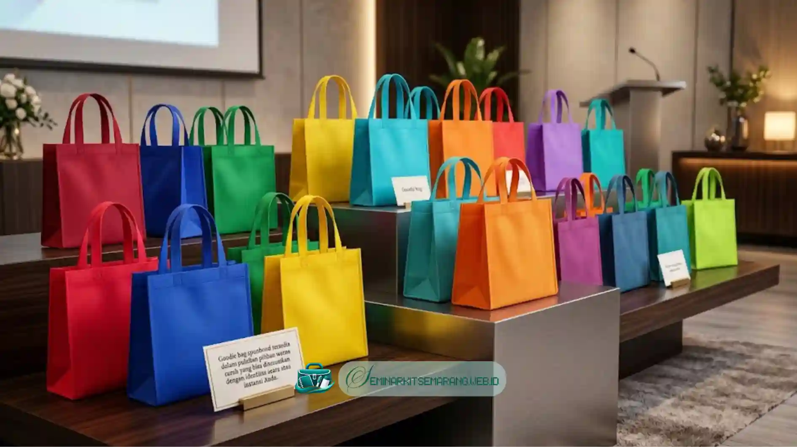

Apa Itu Spunbond?
Spunbond adalah kain modern yang diolah dari serat polipropilena memanjang dan dipadatkan menggunakan proses pemanasan khusus. Material ini berbobot super ringan namun dibekali struktur serat yang kokoh menahan percikan air ringan.
Bahan spunbond ini jamak tersedia di pasaran lokal dalam bermacam ketebalan dasar, mulai dari 45gsm hingga 100gsm. Khusus untuk tas goodie bag acara seminar, spesifikasi ketebalan 70gsm atau 80gsm adalah kombinasi paling ideal.
4 Alasan Spunbond Tetap Tak Tergantikan
1. Harga yang Sangat Kompetitif
Untuk panitia acara berskala besar dengan dana minim, tas spunbond merupakan solusi efektif yang nyaris tak tertandingi. Harga pasarnya bisa 3x lipat lebih murah dibanding kanvas, sangat cocok mendampingi seri Paket Basic kami.
2. Pilihan Warna Paling Beragam
Daya tarik lainnya terletak pada koleksi pilihan palet warna pabrik yang amat kaya dan cerah dipandang mata. Anda dapat mencocokkan nuansa tas ini dengan pedoman warna identitas instansi sebelum tas memasuki tahapan sablon.

3. Ramah Lingkungan Dibanding Plastik
Walau berbahan turunan polimer plastik, jejak karbon spunbond jauh lebih bersahabat bila dibandingkan kresek tipis sekali pakai. Jika dirawat baik, tas ini bisa dipakai ulang ratusan kali. Ramah Lingkungan
4. Mudah Disablon dengan Hasil Baik
Tekstur permukaan spunbond memiliki daya ikat mumpuni terhadap mayoritas ragam tinta cetak dan sablon standar percetakan nasional. Aplikasi sablon 1 sampai 3 warna solid saja sudah terbukti sangat jitu menghadirkan branding visual nan memukau.
Perbandingan Material Tas Seminar
| Material | Harga | Ketahanan | Pilihan Warna |
|---|---|---|---|
| Spunbond | Sangat Murah | Cukup | Sangat Banyak |
| Kanvas | Sedang | Tinggi | Terbatas |
| Dinir | Sedang-Mahal | Sangat Tinggi | Terbatas |
| Blacu | Murah-Sedang | Cukup | Alami (krem) |
Tips Memaksimalkan Goodie Bag Spunbond
- Pilih Minimal 70gsm: Di bawah itu, tas terasa terlalu tipis dan murahan saat dipegang.
- Gunakan Handle Tali Rajut: Handle rajut lebih kuat dan terasa lebih premium dibanding handle press biasa.
- Kombinasikan dengan Sablon Spot UV: Efek glossy spot pada logo memberikan tampilan premium di atas tas spunbond.
- Perhatikan Ukuran: Ukuran 35x40cm adalah standar paling populer untuk goodie bag seminar.
Seminar Kit Semarang menyajikan ragam pasokan goodie bag spunbond siap produksi dalam pilihan gramasi dan warna terlengkap. Segera Hubungi kami sekarang dan dapatkan tawaran khusus harga bersaing yang dirancang hanya untuk instansi Anda!

Indriana Safitri
Indriana Safitri adalah seorang siswi pengembang web (web developer) yang berdedikasi. Ia saat ini tengah ditugaskan untuk merancang dan mengembangkan berbagai proyek website profesional dengan standar industri.